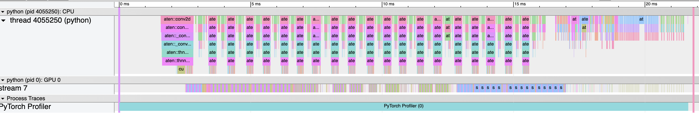

备注
点击此处下载完整示例代码
PyTorch 分析器
创建时间：2025 年 4 月 1 日 | 最后更新时间：2025 年 4 月 1 日 | 最后验证：未验证
本食谱解释了如何使用 PyTorch 分析器以及如何测量模型操作符的时间和内存消耗。
简介
PyTorch 包含一个简单的分析器 API，当用户需要确定模型中最昂贵的操作符时非常有用。
在这个菜谱中，我们将使用一个简单的 Resnet 模型来演示如何使用性能分析器来分析模型性能。
设置
安装 torch 和 torchvision 使用以下命令：
pip install torch torchvision
步骤 ¶
导入所有必要的库
实例化一个简单的 Resnet 模型
使用性能分析器分析执行时间
使用分析器分析内存消耗
使用跟踪功能
检查堆栈跟踪
使用分析器分析长时间运行的任务
1. 导入所有必要的库 ¶
在本菜谱中，我们将使用 torch ， torchvision.models 和 profiler 模块：
import torch
import torchvision.models as models
from torch.profiler import profile, record_function, ProfilerActivity
2. 实例化一个简单的 Resnet 模型 ¶
让我们创建一个 Resnet 模型的实例并为它准备输入：
model = models.resnet18()
inputs = torch.randn(5, 3, 224, 224)
使用性能分析器分析执行时间 ¶
PyTorch 性能分析器通过上下文管理器启用，并接受多个参数，其中一些最有用的参数包括：
-
activities- 要分析的活动列表： ProfilerActivity.CPU- PyTorch 运算符、TorchScript 函数和用户定义的代码标签（见record_function以下）；ProfilerActivity.CUDA- 在设备上运行的 CUDA 内核；ProfilerActivity.XPU- 在设备上运行的 XPU 内核；
-
record_shapes- 是否记录算子输入的形状；profile_memory- 是否报告模型张量消耗的内存量；
注意：当使用 CUDA 时，性能分析器也会显示在主机上发生的 CUDA 事件。
让我们看看如何使用性能分析器来分析执行时间：
with profile(activities=[ProfilerActivity.CPU], record_shapes=True) as prof:
with record_function("model_inference"):
model(inputs)
注意，我们可以使用 record_function 上下文管理器来用用户提供的名称标记任意代码范围（如上例中使用的 model_inference 作为标签）。
性能分析器允许检查在带有性能分析器上下文管理器的代码范围执行期间调用了哪些算子。如果有多个性能分析器范围同时激活（例如，在并行 PyTorch 线程中），则每个性能分析器上下文管理器仅跟踪其对应范围的算子。性能分析器还会自动分析使用 torch.jit._fork 启动的异步任务（在反向传播的情况下）以及使用 backward() 调用的反向传播算子。
让我们打印出上述执行的统计数据：
print(prof.key_averages().table(sort_by="cpu_time_total", row_limit=10))
输出将类似于（省略了一些列）：
# --------------------------------- ------------ ------------ ------------ ------------
# Name Self CPU CPU total CPU time avg # of Calls
# --------------------------------- ------------ ------------ ------------ ------------
# model_inference 5.509ms 57.503ms 57.503ms 1
# aten::conv2d 231.000us 31.931ms 1.597ms 20
# aten::convolution 250.000us 31.700ms 1.585ms 20
# aten::_convolution 336.000us 31.450ms 1.573ms 20
# aten::mkldnn_convolution 30.838ms 31.114ms 1.556ms 20
# aten::batch_norm 211.000us 14.693ms 734.650us 20
# aten::_batch_norm_impl_index 319.000us 14.482ms 724.100us 20
# aten::native_batch_norm 9.229ms 14.109ms 705.450us 20
# aten::mean 332.000us 2.631ms 125.286us 21
# aten::select 1.668ms 2.292ms 8.988us 255
# --------------------------------- ------------ ------------ ------------ ------------
# Self CPU time total: 57.549m
#
如预期，大部分时间都花在了卷积操作上（特别是 PyTorch 编译时带有 MKL-DNN 支持的 mkldnn_convolution ）。注意 self cpu time 和 cpu time 之间的差异 - 运算符可以调用其他运算符，self cpu time 排除了子运算符调用所花费的时间，而 total cpu time 则包括它。您可以选择通过将 sort_by="self_cpu_time_total" 传递给 table 调用来按 self cpu time 排序。
要获得更细粒度的结果并包括运算符输入形状，请传递 group_by_input_shape=True （注意：这需要使用 record_shapes=True 运行分析器）：
print(prof.key_averages(group_by_input_shape=True).table(sort_by="cpu_time_total", row_limit=10))
输出可能看起来像这样（省略了一些列）：
--------------------------------- ------------ -------------------------------------------
Name CPU total Input Shapes
--------------------------------- ------------ -------------------------------------------
model_inference 57.503ms []
aten::conv2d 8.008ms [5,64,56,56], [64,64,3,3], [], ..., []]
aten::convolution 7.956ms [[5,64,56,56], [64,64,3,3], [], ..., []]
aten::_convolution 7.909ms [[5,64,56,56], [64,64,3,3], [], ..., []]
aten::mkldnn_convolution 7.834ms [[5,64,56,56], [64,64,3,3], [], ..., []]
aten::conv2d 6.332ms [[5,512,7,7], [512,512,3,3], [], ..., []]
aten::convolution 6.303ms [[5,512,7,7], [512,512,3,3], [], ..., []]
aten::_convolution 6.273ms [[5,512,7,7], [512,512,3,3], [], ..., []]
aten::mkldnn_convolution 6.233ms [[5,512,7,7], [512,512,3,3], [], ..., []]
aten::conv2d 4.751ms [[5,256,14,14], [256,256,3,3], [], ..., []]
--------------------------------- ------------ -------------------------------------------
Self CPU time total: 57.549ms
注意 aten::convolution 两次出现，但输入形状不同。
分析器还可以用于分析在 GPU 和 XPU 上执行模型的性能：用户可以在 cpu、cuda 和 xpu 之间切换
if torch.cuda.is_available():
device = 'cuda'
elif torch.xpu.is_available():
device = 'xpu'
else:
print('Neither CUDA nor XPU devices are available to demonstrate profiling on acceleration devices')
import sys
sys.exit(0)
activities = [ProfilerActivity.CPU, ProfilerActivity.CUDA, ProfilerActivity.XPU]
sort_by_keyword = device + "_time_total"
model = models.resnet18().to(device)
inputs = torch.randn(5, 3, 224, 224).to(device)
with profile(activities=activities, record_shapes=True) as prof:
with record_function("model_inference"):
model(inputs)
print(prof.key_averages().table(sort_by=sort_by_keyword, row_limit=10))
（注意：第一次使用 CUDA 分析可能会带来额外的开销。）
结果表格输出（省略了一些列）：
------------------------------------------------------- ------------ ------------ Name Self CUDA CUDA total ------------------------------------------------------- ------------ ------------ model_inference 0.000us 11.666ms aten::conv2d 0.000us 10.484ms aten::convolution 0.000us 10.484ms aten::_convolution 0.000us 10.484ms aten::_convolution_nogroup 0.000us 10.484ms aten::thnn_conv2d 0.000us 10.484ms aten::thnn_conv2d_forward 10.484ms 10.484ms void at::native::im2col_kernel<float>(long, float co... 3.844ms 3.844ms sgemm_32x32x32_NN 3.206ms 3.206ms sgemm_32x32x32_NN_vec 3.093ms 3.093ms ------------------------------------------------------- ------------ ------------ Self CPU time total: 23.015ms Self CUDA time total: 11.666ms
（注意：首次使用 XPU 分析可能会带来额外的开销。）
结果表格输出（省略了一些列）：
- ——————————————————- ———— ———— ———— ———— ————
名称 自定义 XPU 自定义 XPU % XPU 总计 XPU 平均时间 # 调用次数
- ——————————————————- ———— ———— ———— ———— ————
- 模型推理 0.000us 0.00% 2.567ms 2.567ms 1
aten::conv2d 0.000us 0.00% 1.871ms 93.560us 20
aten::convolution 0.000us 0.00% 1.871ms 93.560us 20
aten::_convolution 0.000us 0.00% 1.871ms 93.560us 20
- aten::convolution_overrideable 1.871ms 72.89% 1.871ms 93.560us 20
gen_conv 1.484ms 57.82% 1.484ms 74.216us 20
aten::batch_norm 0.000us 0.00% 432.640us 21.632us 20
- aten::_batch_norm_impl_index 0.000us 0.00% 432.640us 21.632us 20
- aten::native_batch_norm 432.640us 16.85% 432.640us 21.632us 20
conv_reorder 386.880us 15.07% 386.880us 6.448us 60
——————————————————- ———— ———— ———— ———— ———— 自身 CPU 总时间：712.486ms 自身 XPU 总时间：2.567ms
#
注意输出中设备内核的出现（例如： sgemm_32x32x32_NN ）。
4. 使用分析器分析内存消耗
PyTorch 分析器还可以显示模型操作执行过程中分配（或释放）的内存量（由模型的张量使用）。在下面的输出中，'self'内存对应于操作符分配（释放）的内存，不包括对其他操作符的子调用。要启用内存分析功能，请传递 profile_memory=True 。
model = models.resnet18()
inputs = torch.randn(5, 3, 224, 224)
with profile(activities=[ProfilerActivity.CPU],
profile_memory=True, record_shapes=True) as prof:
model(inputs)
print(prof.key_averages().table(sort_by="self_cpu_memory_usage", row_limit=10))
# (omitting some columns)
# --------------------------------- ------------ ------------ ------------
# Name CPU Mem Self CPU Mem # of Calls
# --------------------------------- ------------ ------------ ------------
# aten::empty 94.79 Mb 94.79 Mb 121
# aten::max_pool2d_with_indices 11.48 Mb 11.48 Mb 1
# aten::addmm 19.53 Kb 19.53 Kb 1
# aten::empty_strided 572 b 572 b 25
# aten::resize_ 240 b 240 b 6
# aten::abs 480 b 240 b 4
# aten::add 160 b 160 b 20
# aten::masked_select 120 b 112 b 1
# aten::ne 122 b 53 b 6
# aten::eq 60 b 30 b 2
# --------------------------------- ------------ ------------ ------------
# Self CPU time total: 53.064ms
print(prof.key_averages().table(sort_by="cpu_memory_usage", row_limit=10))
输出可能看起来像这样（省略了一些列）：
--------------------------------- ------------ ------------ ------------
Name CPU Mem Self CPU Mem # of Calls
--------------------------------- ------------ ------------ ------------
aten::empty 94.79 Mb 94.79 Mb 121
aten::batch_norm 47.41 Mb 0 b 20
aten::_batch_norm_impl_index 47.41 Mb 0 b 20
aten::native_batch_norm 47.41 Mb 0 b 20
aten::conv2d 47.37 Mb 0 b 20
aten::convolution 47.37 Mb 0 b 20
aten::_convolution 47.37 Mb 0 b 20
aten::mkldnn_convolution 47.37 Mb 0 b 20
aten::max_pool2d 11.48 Mb 0 b 1
aten::max_pool2d_with_indices 11.48 Mb 11.48 Mb 1
--------------------------------- ------------ ------------ ------------
Self CPU time total: 53.064ms
5. 使用跟踪功能 ¶
分析结果可以输出为 .json 跟踪文件：跟踪 CUDA 或 XPU 内核 用户可以在 cpu、cuda 和 xpu 之间切换
device = 'cuda'
activities = [ProfilerActivity.CPU, ProfilerActivity.CUDA, ProfilerActivity.XPU]
model = models.resnet18().to(device)
inputs = torch.randn(5, 3, 224, 224).to(device)
with profile(activities=activities) as prof:
model(inputs)
prof.export_chrome_trace("trace.json")
您可以在 Chrome 跟踪查看器中检查分析的操作序列和 CUDA/XPU 内核（ chrome://tracing ）：
{kind=link}

6. 检查堆栈跟踪 ¶
分析器可以用来分析 Python 和 TorchScript 堆栈跟踪：
sort_by_keyword = "self_" + device + "_time_total"
with profile(
activities=activities,
with_stack=True,
) as prof:
model(inputs)
# Print aggregated stats
print(prof.key_averages(group_by_stack_n=5).table(sort_by=sort_by_keyword, row_limit=2))
输出可能看起来像这样（省略了一些列）：
------------------------- -----------------------------------------------------------
Name Source Location
------------------------- -----------------------------------------------------------
aten::thnn_conv2d_forward .../torch/nn/modules/conv.py(439): _conv_forward
.../torch/nn/modules/conv.py(443): forward
.../torch/nn/modules/module.py(1051): _call_impl
.../site-packages/torchvision/models/resnet.py(63): forward
.../torch/nn/modules/module.py(1051): _call_impl
aten::thnn_conv2d_forward .../torch/nn/modules/conv.py(439): _conv_forward
.../torch/nn/modules/conv.py(443): forward
.../torch/nn/modules/module.py(1051): _call_impl
.../site-packages/torchvision/models/resnet.py(59): forward
.../torch/nn/modules/module.py(1051): _call_impl
------------------------- -----------------------------------------------------------
Self CPU time total: 34.016ms
Self CUDA time total: 11.659ms
注意 torchvision/models/resnet.py script 中的两个卷积和两个调用点。
（警告：堆栈跟踪会增加额外的分析开销。）
7. 使用分析器分析长时间运行的作业 ¶
PyTorch 分析器为处理长时间运行的作业（如训练循环）提供了一个额外的 API。跟踪所有执行可能会很慢，并导致非常大的跟踪文件。为了避免这种情况，请使用可选参数：
schedule- 指定一个接受整数参数（步骤号）作为输入并返回分析器操作的函数，最佳使用此参数的方式是使用torch.profiler.schedule辅助函数为您生成计划；表示一个函数，该函数接受一个指向分析器的引用作为输入，并在分析器每次新跟踪准备好时被调用。
为了说明 API 的工作原理，我们首先考虑以下带有 torch.profiler.schedule 辅助函数的示例：
分析器假定长时间运行的任务由步骤组成，从零开始编号。上面的示例为分析器定义了以下操作序列：
参数
skip_first告诉分析器它应该忽略前 10 个步骤（skip_first的默认值为零）；在完成第一个
skip_first步骤后，分析器开始执行分析周期；每个周期由三个阶段组成：
空闲阶段（
wait=5步骤），在此阶段分析器处于非活动状态；预热阶段（
warmup=1步骤），在此阶段分析器开始跟踪，但结果会被丢弃；这个阶段用于丢弃分析器在跟踪开始时获得的样本，因为这些样本通常受到额外开销的影响；活动跟踪（
active=3步骤），在此阶段，分析器会跟踪并记录数据；
可选的
repeat参数指定了循环次数的上限。默认情况下（零值），分析器将执行循环，直到作业运行完毕。
因此，在上面的示例中，分析器将跳过前 15 个步骤，在下一个步骤上进行预热，然后积极记录下一个 3 个步骤，跳过另外 5 个步骤，在下一个步骤上进行预热，然后积极记录另外 3 个步骤。由于指定了 repeat=2 参数值，分析器将在第一个循环后停止记录。
每个循环结束时，分析器会调用指定的 on_trace_ready 函数，并将自身作为参数传递。此函数用于处理新的跟踪信息——无论是获取表格输出还是将输出保存到磁盘上的跟踪文件。
向分析器发送下一个步骤开始的信号，请调用 prof.step() 函数。当前分析器步骤存储在 prof.step_num 。
以下示例展示了如何使用上述所有概念来为 CUDA 和 XPU 内核使用：
sort_by_keyword = "self_" + device + "_time_total"
def trace_handler(p):
output = p.key_averages().table(sort_by=sort_by_keyword, row_limit=10)
print(output)
p.export_chrome_trace("/tmp/trace_" + str(p.step_num) + ".json")
with profile(
activities=activities,
schedule=torch.profiler.schedule(
wait=1,
warmup=1,
active=2),
on_trace_ready=trace_handler
) as p:
for idx in range(8):
model(inputs)
p.step()
了解更多 ¶
查看以下食谱/教程以继续您的学习：
使用 TensorBoard 可视化模型、数据和训练教程
脚本总运行时间：（0 分钟 0.000 秒）